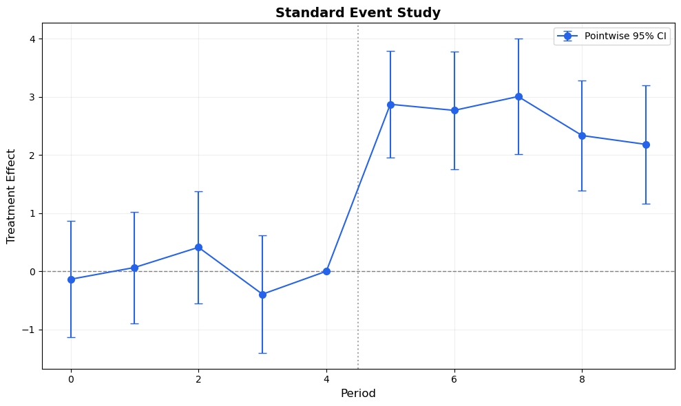
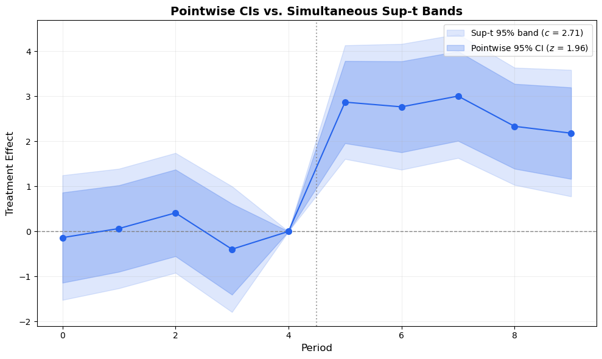
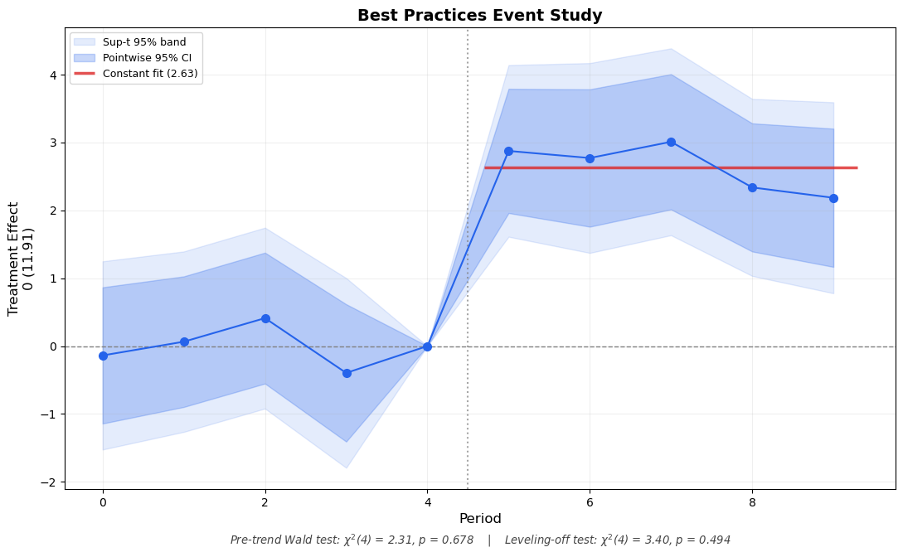

The standard event study plot — point estimates with 95% pointwise confidence intervals — is ubiquitous in applied economics. But it leaves a surprising amount of information on the table.
Freyaldenhoven, Hansen, Pérez & Shapiro (2021) proposed several practical enhancements that make event study plots more informative, more honest, and easier to interpret. Most of these are simple to implement yet rarely used in practice.
In this post, we implement five enhancements using the diff-diff Python package:
Simultaneous confidence bands — correct for multiple testing across periods
Parenthetical outcome labels — show the baseline outcome level for economic interpretation
Joint pre-trend Wald test — formal test instead of visual inspection
Leveling-off test — are post-treatment effects constant over time?
Putting it all together — a complete “best practices” event study plot
Each enhancement builds on the previous one. By the end, we will have transformed a standard event study into a much richer visualization.
1 Setup
import numpy as npimport pandas as pdimport matplotlib.pyplot as pltfrom scipy import stats as scipy_statsfrom diff_diff import MultiPeriodDiD, generate_did_dataimport warningswarnings.filterwarnings("ignore")np.random.seed(42)
c:\Users\danny\anaconda3\Lib\site-packages\pandas\core\computation\expressions.py:22: UserWarning: Pandas requires version '2.10.2' or newer of 'numexpr' (version '2.8.7' currently installed).
from pandas.core.computation.check import NUMEXPR_INSTALLED
c:\Users\danny\anaconda3\Lib\site-packages\pandas\core\arrays\masked.py:56: UserWarning: Pandas requires version '1.4.2' or newer of 'bottleneck' (version '1.3.7' currently installed).
from pandas.core import (
We generate panel data with 200 units over 10 periods, where treatment begins at period 5. The true treatment effect is 3.0, and we include a slight time trend to make the example realistic.
Let’s first see the standard event study plot — point estimates with pointwise 95% CIs:
Code
# Extract data from resultsref_period = results.reference_periodperiods_all =sorted(results.period_effects.keys())estimates = [results.period_effects[p].effect for p in periods_all]ses = [results.period_effects[p].se for p in periods_all]# Add reference period (beta = 0, se = 0)periods_plot =sorted(periods_all + [ref_period])est_plot = []se_plot = []for p in periods_plot:if p == ref_period: est_plot.append(0.0) se_plot.append(0.0)else: est_plot.append(results.period_effects[p].effect) se_plot.append(results.period_effects[p].se)est_plot = np.array(est_plot)se_plot = np.array(se_plot)periods_plot = np.array(periods_plot)z = scipy_stats.norm.ppf(0.975)fig, ax = plt.subplots(figsize=(10, 6))ax.errorbar(periods_plot, est_plot, yerr=z * se_plot, fmt='o-', color='#2563eb', capsize=4, markersize=7, linewidth=1.5, label='Pointwise 95% CI')ax.axhline(0, color='gray', linestyle='--', linewidth=1)ax.axvline(ref_period +0.5, color='gray', linestyle=':', linewidth=1.5, alpha=0.7)ax.set_xlabel('Period', fontsize=12)ax.set_ylabel('Treatment Effect', fontsize=12)ax.set_title('Standard Event Study', fontsize=14, fontweight='bold')ax.legend(fontsize=10)ax.grid(True, alpha=0.2)plt.tight_layout()plt.show()

Figure 1: Standard event study plot with pointwise 95% confidence intervals. This is what most papers show — but it can be improved.
2 Simultaneous Confidence Bands
The 95% confidence intervals in Figure 1 are pointwise: each interval has 95% coverage for its own period. But when we look at all periods simultaneously — as we always do in an event study — the joint coverage is much less than 95%.
This matters most for pre-trend testing. If we have 4 pre-treatment coefficients, each with a 95% CI, the probability that all four CIs contain the true value simultaneously is roughly 0.95^4 \approx 0.81, not 0.95. We are over-rejecting the null of parallel trends.
The simultaneous band is then \hat{\beta}_t \pm c_\alpha^{\text{sup-t}} \cdot \hat{\sigma}_t. It is always wider than the pointwise CI — the price of honest joint inference.
The critical value is computed by simulation from the multivariate normal distribution implied by the variance-covariance matrix of the estimates.
def compute_supt_critical_value(vcov, alpha=0.05, n_sim=10000, seed=42):""" Compute the sup-t critical value for simultaneous confidence bands. Parameters ---------- vcov : array-like Variance-covariance matrix of the estimates. alpha : float Significance level. n_sim : int Number of simulation draws. Returns ------- float The sup-t critical value. """ rng = np.random.default_rng(seed) k = vcov.shape[0]# Compute correlation matrix sd = np.sqrt(np.diag(vcov)) corr = vcov / np.outer(sd, sd)# Ensure positive semi-definite eigvals = np.linalg.eigvalsh(corr)if np.any(eigvals <-1e-10): corr = corr + (-min(eigvals) +1e-6) * np.eye(k)# Simulate from MVN(0, corr) draws = rng.multivariate_normal(np.zeros(k), corr, size=n_sim)# Max absolute value across dimensions for each draw max_abs = np.max(np.abs(draws), axis=1)# Critical value: (1-alpha) quantile c_supt = np.quantile(max_abs, 1- alpha)return c_supt
# Extract VCV sub-matrix for the event study coefficients# results.vcov is the full regression VCV; we need the interaction termsidx_map = results.interaction_indices # {period: column_index}idx_list = [idx_map[p] for p in periods_all] # ordered by periodvcov_full = results.vcovvcov_es = vcov_full[np.ix_(idx_list, idx_list)]# Compute sup-t critical valuec_supt = compute_supt_critical_value(vcov_es, alpha=0.05, n_sim=50000)c_pointwise = scipy_stats.norm.ppf(0.975)print(f'Pointwise critical value (z): {c_pointwise:.3f}')print(f'Sup-t critical value: {c_supt:.3f}')print(f'Sup-t is {c_supt / c_pointwise:.1f}x wider than pointwise')
Pointwise critical value (z): 1.960
Sup-t critical value: 2.708
Sup-t is 1.4x wider than pointwise
Code
# SE for non-reference periods (reference has se=0)se_nz = np.array([results.period_effects[p].se for p in periods_all])est_nz = np.array([results.period_effects[p].effect for p in periods_all])periods_nz = np.array(periods_all)fig, ax = plt.subplots(figsize=(10, 6))# Sup-t bands (outer, lighter)supt_lo = np.zeros(len(periods_plot))supt_hi = np.zeros(len(periods_plot))pw_lo = np.zeros(len(periods_plot))pw_hi = np.zeros(len(periods_plot))j =0for i, p inenumerate(periods_plot):if p == ref_period: supt_lo[i] =0.0 supt_hi[i] =0.0 pw_lo[i] =0.0 pw_hi[i] =0.0else: supt_lo[i] = est_nz[j] - c_supt * se_nz[j] supt_hi[i] = est_nz[j] + c_supt * se_nz[j] pw_lo[i] = est_nz[j] - c_pointwise * se_nz[j] pw_hi[i] = est_nz[j] + c_pointwise * se_nz[j] j +=1ax.fill_between(periods_plot, supt_lo, supt_hi, alpha=0.15, color='#2563eb', label=f'Sup-t 95% band ($c$ = {c_supt:.2f})')ax.fill_between(periods_plot, pw_lo, pw_hi, alpha=0.25, color='#2563eb', label=f'Pointwise 95% CI ($z$ = {c_pointwise:.2f})')ax.plot(periods_plot, est_plot, 'o-', color='#2563eb', markersize=7, linewidth=1.5, zorder=3)ax.axhline(0, color='gray', linestyle='--', linewidth=1)ax.axvline(ref_period +0.5, color='gray', linestyle=':', linewidth=1.5, alpha=0.7)ax.set_xlabel('Period', fontsize=12)ax.set_ylabel('Treatment Effect', fontsize=12)ax.set_title('Pointwise CIs vs. Simultaneous Sup-t Bands', fontsize=14, fontweight='bold')ax.legend(fontsize=10)ax.grid(True, alpha=0.2)plt.tight_layout()plt.show()

Figure 2: Pointwise CIs (dark blue) vs. simultaneous sup-t bands (light blue). The sup-t bands maintain 95% joint coverage across all periods — the honest standard for testing parallel trends.
The sup-t bands are wider — that’s the price of joint coverage. Use them when making joint statements like:
“All pre-treatment coefficients are jointly insignificant” (parallel trends)
“The treatment effect is significant at every post-treatment period”
Pointwise CIs remain useful for period-specific inference (“what is the effect at t=7?”).
3 Parenthetical Outcome Labels
Event study coefficients show changes relative to a reference period. But a coefficient of \hat{\beta}_7 = 3.2 is hard to interpret without knowing the baseline level of the outcome.
Is 3.2 economically large or small? If the average outcome at the reference period is 40, then 3.2 / 40 \approx 8\% — a meaningful effect. If it’s 400, then 3.2 / 400 \approx 0.8\% — perhaps negligible.
Freyaldenhoven et al. (2021) recommend adding a parenthetical label on the y-axis showing the baseline outcome level, like:
0 (41.94)
This tells the reader: “the normalized zero on this axis corresponds to an outcome level of 41.94.” Readers can then immediately compute percentage effects in their heads.
# Compute the baseline outcome: average of treated group at reference periodbaseline_outcome = data[ (data['treated'] ==1) & (data['period'] == ref_period)]['outcome'].mean()print(f'Average outcome for treated group at reference period {ref_period}: {baseline_outcome:.2f}')
Average outcome for treated group at reference period 4: 11.91
Figure 3: The parenthetical label ‘0 (XX.XX)’ on the y-axis tells the reader the baseline outcome level, enabling immediate computation of percentage effects.
4 Joint Pre-Trend Wald Test
Eyeballing whether pre-treatment coefficients “look close to zero” is subjective and has low statistical power. A formal joint Wald test provides a proper statistical answer.
Under the null hypothesis of parallel trends, all pre-treatment coefficients are jointly zero:
W = \hat{\boldsymbol{\beta}}_{\text{pre}}^\prime \, \hat{V}_{\text{pre}}^{-1} \, \hat{\boldsymbol{\beta}}_{\text{pre}} \sim \chi^2(K-1)
where \hat{\boldsymbol{\beta}}_{\text{pre}} is the vector of pre-treatment coefficients and \hat{V}_{\text{pre}} is their variance-covariance sub-matrix.
Already in diff-diff for Imputation DiD
The ImputationDiD estimator has a built-in pretrend_test() method (Borusyak et al. 2024, Equation 9). The implementation below is a generalized version that works with any estimator that provides a VCV matrix, including MultiPeriodDiD.
def pretrend_wald_test(estimates, vcov, pre_indices):""" Joint Wald test for pre-treatment coefficients = 0. Parameters ---------- estimates : array-like All event study coefficient estimates (excluding reference). vcov : array-like VCV matrix for these estimates. pre_indices : list of int Indices into estimates/vcov for pre-treatment coefficients. Returns ------- dict with 'f_stat', 'p_value', 'df' """ beta_pre = np.array([estimates[i] for i in pre_indices]) V_pre = vcov[np.ix_(pre_indices, pre_indices)] k =len(beta_pre) W = beta_pre @ np.linalg.solve(V_pre, beta_pre) p_value =1- scipy_stats.chi2.cdf(W, df=k)return {'f_stat': W, 'p_value': p_value, 'df': k}
# Identify pre-treatment indices (all periods < reference)pre_periods = [p for p in periods_all if p < ref_period]pre_indices = [periods_all.index(p) for p in pre_periods]pt_test = pretrend_wald_test(estimates, vcov_es, pre_indices)print(f'Joint Pre-Trend Wald Test')print(f' H0: beta_pre = 0 (parallel trends)')print(f' Chi2({pt_test["df"]}) = {pt_test["f_stat"]:.3f}')print(f' p-value = {pt_test["p_value"]:.4f}')if pt_test['p_value'] >0.05:print(f' -> Fail to reject parallel trends at 5% level')else:print(f' -> Reject parallel trends at 5% level')
Joint Pre-Trend Wald Test
H0: beta_pre = 0 (parallel trends)
Chi2(4) = 2.315
p-value = 0.6781
-> Fail to reject parallel trends at 5% level
5 Leveling-Off Test
Once we’ve established a treatment effect exists, a natural follow-up question is: are the post-treatment effects constant over time, or do they grow/decay?
If effects are approximately constant, we can summarize them with a single average ATT — a much simpler message. The leveling-off test formalizes this:
H_0: \beta_0 = \beta_1 = \cdots = \beta_K
We test this using a contrast matrix R that takes successive differences of the post-treatment coefficients:
W = (R\hat{\boldsymbol{\beta}}_{\text{post}})^\prime (R\hat{V}_{\text{post}}R^\prime)^{-1} (R\hat{\boldsymbol{\beta}}_{\text{post}}) \sim \chi^2(K)
If we fail to reject, it’s reasonable to summarize the post-treatment effects with a constant effects step function: a flat line at the average post-treatment coefficient.
def leveling_off_test(estimates, vcov, post_indices):""" Test H0: all post-treatment coefficients are equal. Parameters ---------- estimates : array-like All event study coefficient estimates (excluding reference). vcov : array-like VCV matrix for these estimates. post_indices : list of int Indices into estimates/vcov for post-treatment coefficients. Returns ------- dict with 'f_stat', 'p_value', 'df', 'avg_effect' """ beta_post = np.array([estimates[i] for i in post_indices]) V_post = vcov[np.ix_(post_indices, post_indices)] k =len(beta_post)# Contrast matrix: successive differences R = np.zeros((k -1, k))for i inrange(k -1): R[i, i] =-1 R[i, i +1] =1 Rb = R @ beta_post RVR = R @ V_post @ R.T W = Rb @ np.linalg.solve(RVR, Rb) p_value =1- scipy_stats.chi2.cdf(W, df=k -1)# Average effect (for step function overlay) avg_effect = np.mean(beta_post)return {'f_stat': W, 'p_value': p_value, 'df': k -1, 'avg_effect': avg_effect}
# Identify post-treatment indicespost_periods = [p for p in periods_all if p > ref_period]post_indices = [periods_all.index(p) for p in post_periods]lo_test = leveling_off_test(estimates, vcov_es, post_indices)print(f'Leveling-Off Test')print(f' H0: beta_post are all equal (constant effects)')print(f' Chi2({lo_test["df"]}) = {lo_test["f_stat"]:.3f}')print(f' p-value = {lo_test["p_value"]:.4f}')print(f' Average post-treatment effect: {lo_test["avg_effect"]:.3f}')if lo_test['p_value'] >0.05:print(f' -> Fail to reject constant effects')print(f' -> Can summarize with average ATT = {lo_test["avg_effect"]:.3f}')else:print(f' -> Reject constant effects (effects vary over time)')
Leveling-Off Test
H0: beta_post are all equal (constant effects)
Chi2(4) = 3.398
p-value = 0.4936
Average post-treatment effect: 2.633
-> Fail to reject constant effects
-> Can summarize with average ATT = 2.633
6 Putting It All Together
Now let’s combine all five enhancements into a single publication-ready event study plot:
Constant effects step function overlaid when leveling-off is not rejected
def plot_event_study_enhanced( results, data,*, outcome_col='outcome', treatment_col='treated', time_col='period', alpha=0.05, n_sim=50000, show_supt=True, show_baseline_outcome=True, show_pretrend_pval=True, show_leveloff_pval=True, show_constant_fit=True, color='#2563eb', figsize=(11, 7), title='Event Study',):""" Enhanced event study plot with Freyaldenhoven et al. (2021) best practices. """ ref_period = results.reference_period all_periods =sorted(results.period_effects.keys())# Extract estimates and SEs est = np.array([results.period_effects[p].effect for p in all_periods]) se = np.array([results.period_effects[p].se for p in all_periods])# Full period array including reference p_plot =sorted(all_periods + [ref_period]) e_plot = np.array([0.0if p == ref_period else results.period_effects[p].effect for p in p_plot]) s_plot = np.array([0.0if p == ref_period else results.period_effects[p].se for p in p_plot]) p_plot = np.array(p_plot)# VCV sub-matrix idx_map = results.interaction_indices idx_list = [idx_map[p] for p in all_periods] vcov = results.vcov[np.ix_(idx_list, idx_list)]# Critical values z = scipy_stats.norm.ppf(1- alpha /2) c_sup = compute_supt_critical_value(vcov, alpha=alpha, n_sim=n_sim) if show_supt else z# Pre/post indices pre_idx = [all_periods.index(p) for p in all_periods if p < ref_period] post_idx = [all_periods.index(p) for p in all_periods if p > ref_period]# Tests pt = pretrend_wald_test(est, vcov, pre_idx) if show_pretrend_pval elseNone lo = leveling_off_test(est, vcov, post_idx) if show_leveloff_pval elseNone# Baseline outcome baseline =Noneif show_baseline_outcome: baseline = data[ (data[treatment_col] ==1) & (data[time_col] == ref_period) ][outcome_col].mean()# --- Plot --- fig, ax = plt.subplots(figsize=figsize)# Bandsif show_supt: ax.fill_between(p_plot, e_plot - c_sup * s_plot, e_plot + c_sup * s_plot, alpha=0.12, color=color, label=f'Sup-t {int((1-alpha)*100)}% band') ax.fill_between(p_plot, e_plot - z * s_plot, e_plot + z * s_plot, alpha=0.25, color=color, label=f'Pointwise {int((1-alpha)*100)}% CI') ax.plot(p_plot, e_plot, 'o-', color=color, markersize=7, linewidth=1.5, zorder=3)# Constant effects step functionif show_constant_fit and lo isnotNoneand lo['p_value'] > alpha: post_periods_arr = np.array([p for p in p_plot if p > ref_period]) ax.hlines(lo['avg_effect'], xmin=post_periods_arr[0] -0.3, xmax=post_periods_arr[-1] +0.3, color='#dc2626', linewidth=2.5, linestyle='-', alpha=0.8, label=f'Constant fit ({lo["avg_effect"]:.2f})', zorder=2)# Reference lines ax.axhline(0, color='gray', linestyle='--', linewidth=1) ax.axvline(ref_period +0.5, color='gray', linestyle=':', linewidth=1.5, alpha=0.7)# Labels ax.set_xlabel('Period', fontsize=12)if baseline isnotNone: ax.set_ylabel(f'Treatment Effect\n0 ({baseline:.2f})', fontsize=12)else: ax.set_ylabel('Treatment Effect', fontsize=12) ax.set_title(title, fontsize=14, fontweight='bold') ax.legend(fontsize=9, loc='upper left') ax.grid(True, alpha=0.2)# Test annotations below the plot footnotes = []if pt isnotNone: footnotes.append(f'Pre-trend Wald test: $\\chi^2$({pt["df"]}) = {pt["f_stat"]:.2f}, 'f'p = {pt["p_value"]:.3f}' )if lo isnotNone: footnotes.append(f'Leveling-off test: $\\chi^2$({lo["df"]}) = {lo["f_stat"]:.2f}, 'f'p = {lo["p_value"]:.3f}' )if footnotes: footnote_text =' | '.join(footnotes) ax.text(0.5, -0.12, footnote_text, transform=ax.transAxes, fontsize=9.5, ha='center', color='#444444', style='italic') plt.tight_layout() plt.subplots_adjust(bottom=0.15) plt.show()return {'pretrend_test': pt, 'leveloff_test': lo, 'baseline_outcome': baseline,'c_supt': c_sup if show_supt elseNone}
Code
info = plot_event_study_enhanced( results, data, title='Best Practices Event Study',)

Figure 4: The complete best-practices event study: simultaneous bands, baseline outcome label, formal test p-values, and constant effects fit. Compare with Figure 1.
Compare Figure 4 with Figure 1. The enhanced version communicates much more:
The outer band shows that pre-treatment coefficients are jointly consistent with zero (sup-t band covers zero for all pre-periods)
The parenthetical label lets readers immediately gauge economic magnitude
The p-values provide formal statistical answers instead of visual guessing
The constant fit line (shown when the leveling-off test does not reject) gives a clean summary of the post-treatment effect
All of this can be produced with a single function call.
7 Before and After
To drive the point home, here is a side-by-side comparison:
Figure 5: Before (standard) vs. After (enhanced). The same data, the same estimates — but the enhanced version communicates far more to the reader.
8 Conclusions
Standard event study plots are a good starting point, but they can — and should — communicate more. The five enhancements from Freyaldenhoven et al. (2021) are all straightforward to implement and add substantial value:
Enhancement
What It Adds
When to Use
Sup-t bands
Joint coverage across all periods
Always (especially for pre-trend assessment)
Outcome label
Economic magnitude interpretation
Always
Pre-trend Wald test
Formal parallel trends test
Always
Leveling-off test
Constant vs. dynamic effects
When summarizing post-treatment effects
Constant fit line
Visual summary of average ATT
When leveling-off is not rejected
The plot_event_study_enhanced() function wraps all of these into a single call. It works with any MultiPeriodDiD result that provides a variance-covariance matrix.
These are presentation improvements — they make existing results clearer. For robustness improvements (what to do when parallel trends might not hold), see our companion post on sensitivity analysis with HonestDiD, smoothest confounding paths, and functional SCBs.
9 References
Freyaldenhoven, S., Hansen, C., Pérez, J. P., & Shapiro, J. M. (2021). Visualization, Identification, and Estimation in the Linear Panel Event-Study Design. NBER Working Paper No. 29170.
Montiel Olea, J. L., & Plagborg-Møller, M. (2019). Simultaneous Confidence Bands: Theory, Implementation, and an Application to SVARs. Journal of Applied Econometrics, 34(1), 1-17.
Borusyak, K., Jaravel, X., & Spiess, J. (2024). Revisiting Event Study Designs: Robust and Efficient Estimation. Review of Economic Studies, 91(6), 3253-3285.
Roth, J. (2022). Pretest with Caution: Event-Study Estimates after Testing for Parallel Trends. American Economic Review: Insights, 4(3), 305-322.
Gerber, I. (2025). diff-diff: A comprehensive Python package for Difference-in-Differences. GitHub.